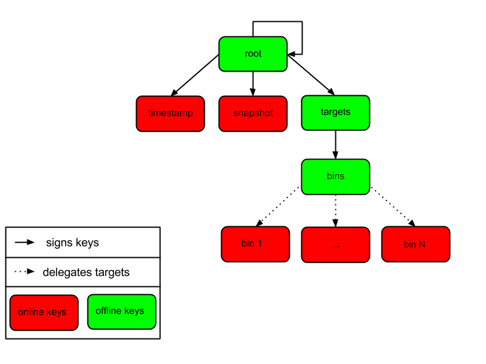

PEP 458 – Secure PyPI downloads with signed repository metadata
- Author:
- Trishank Karthik Kuppusamy <karthik at trishank.com>, Vladimir Diaz <vladimir.diaz at nyu.edu>, Marina Moore <mm9693 at nyu.edu>, Lukas Puehringer <lukas.puehringer at nyu.edu>, Joshua Lock <jlock at vmware.com>, Lois Anne DeLong <lad278 at nyu.edu>, Justin Cappos <jcappos at nyu.edu>
- Sponsor:
- Alyssa Coghlan <ncoghlan at gmail.com>
- BDFL-Delegate:
- Donald Stufft <donald at stufft.io>
- Discussions-To:
- Discourse thread
- Status:
- Accepted
- Type:
- Standards Track
- Topic:
- Packaging
- Created:
- 27-Sep-2013
- Post-History:
- 06-Jan-2019, 13-Nov-2019
- Resolution:
- Discourse message
Table of Contents
- Abstract
- Proposed TUF Integration
- Non-goals
- PEP Status
- Motivation
- Threat Model
- Definitions
- Overview of TUF
- Integrating PyPI with TUF
- PyPI and TUF Metadata
- PyPI and Key Requirements
- How Should Metadata be Generated?
- Revoking Trust in Projects and Distributions
- Key Compromise Analysis
- Managing Future Changes to the Update Process
- Appendix A: Repository Attacks Prevented by TUF
- References
- Acknowledgements
- Copyright
Abstract
This PEP describes changes to the PyPI infrastructure that are needed to ensure that users get valid packages from PyPI. These changes should have minimal impact on other parts of the ecosystem. The PEP focuses on communication between PyPI and users, and so does not require any action by package developers. Developers will upload packages using the current process, and PyPI will automatically generate signed repository metadata for these packages.
In order for the security mechanism to be effective, additional work will need to be done by PyPI consumers (like pip) to verify the signatures and metadata provided by PyPI. This verification can be transparent to users (unless it fails) and provides an automatic security mechanism. There is documentation for how to consume TUF metadata in the TUF repository. However, changes to PyPI consumers are not a pre-requisite for publishing the metadata from PyPI, and can be done according to the timelines and priorities of individual projects.
Proposed TUF Integration
This PEP proposes how The Update Framework [2] (TUF) should be integrated with the Python Package Index (PyPI [1]). TUF was designed to be a flexible security add-on to a software updater or package manager. A full implementation of the framework integrates best security practices, such as separating role responsibilities, adopting the many-man rule for signing packages, keeping signing keys offline, and revocation of expired or compromised signing keys. As a result, attackers would need to steal multiple signing keys, which are stored independently, in order to compromise the role responsible for specifying a repository’s available files. Or, alternatively, a role responsible for indicating the latest snapshot of the repository may also have to be compromised.
The initial integration proposed in this PEP will allow modern package managers, such as pip [3], to be more secure against attacks on PyPI mirrors and PyPI’s own content distribution network, and to better protect users from such attacks. Specifically, this PEP describes how PyPI processes should be adapted to generate and incorporate TUF metadata (i.e., the minimum security model). This minimum security model supports verification of PyPI distributions that are signed with keys stored on PyPI. Distributions that are uploaded by developers are signed by PyPI, requiring no action from developers (other than uploading the distribution), and are immediately available for download. The minimum security model also minimizes PyPI administrative responsibilities by automating much of the signing process.
There is no discussion in this PEP of support for project distributions that are signed by developers (maximum security model). This possible future extension is covered in detail in PEP 480. The maximum security model requires more PyPI administrative work (though no added work for clients), and also proposes an easy-to-use key management solution for developers/publishers, ideas on how to interface with a potential future build farm on PyPI infrastructure, and the feasibility of end-to-end signing.
While it does provide implementation recommendations, this PEP does not prescribe exactly how package managers, such as pip, should be adapted to install or update projects from PyPI with TUF metadata. Package managers interested in adopting TUF on the client side may consult its library documentation, which was created for this purpose.
Non-goals
This PEP does not eliminate any existing features from PyPI. In particular, it does not replace existing support for OpenPGP signatures. Developers can continue to upload detached OpenPGP signatures along with distributions. In the future, PEP 480 may allow developers to directly sign TUF metadata using their OpenPGP keys.
PEP Status
Due to the amount of work required to implement this PEP, in early 2019 it was deferred until appropriate funding could be secured to implement the PEP. The Python Software Foundation secured this funding [22] and new PEP coauthors restarted PEP discussion.
Motivation
Attacks on software repositories are common, even in organizations with very good security practices. The resulting repository compromise allows an attacker to edit all files stored on the repository and sign these files using any keys stored on the repository (online keys). In many signing schemes (like TLS), this access allows the attacker to replace files on the repository and make it look like these files are coming from PyPI. Without a way to revoke and replace the trusted private key, it is very challenging to recover from a repository compromise. In addition to the dangers of repository compromise, software repositories are vulnerable to an attacker on the network (MITM) intercepting and changing files. These and other attacks on software repositories are detailed here.
This PEP, together with the follow-up proposal in PEP 480, aims to protect users of PyPI from compromises of the integrity, consistency, and freshness properties of PyPI packages, and enhances compromise resilience by mitigating key risk and providing mechanisms to recover from a compromise of PyPI or its signing keys.
On January 5, 2013, the Python Software Foundation (PSF) announced that [4] a security breach had occurred on the python.org wikis for Python and Jython. As a result, all of the wiki data was destroyed. Fortunately, the PyPI infrastructure was not affected by this breach. However, the incident is a reminder that PyPI needed to take defensive steps to protect users as much as possible in the event of a compromise. Attacks on software repositories happen all the time [5]. The PSF must accept the possibility of security breaches and prepare PyPI accordingly because it is a valuable resource used by thousands, if not millions, of people.
Before the wiki attack, PyPI used MD5 hashes to tell package managers, such as pip, whether or not a distribution file was corrupted in transit. However, the absence of SSL made it hard for package managers to verify transport integrity to PyPI. It was therefore easy to launch a man-in-the-middle attack between pip and PyPI, and arbitrarily change the content of distributions. As a result, users could be tricked into installing malicious distributions. After the wiki attack, several steps were proposed (some of which were implemented) to deliver a much higher level of security than was previously the case. These steps included requiring SSL to communicate with PyPI [6], restricting project names [7], and migrating from MD5 to SHA-2 hashes [8].
Though necessary, these steps are insufficient to protect distributions because attacks are still possible through other avenues. For example, a public mirror is trusted to honestly mirror PyPI, but some mirrors may misbehave, whether by accident or through malicious intervention. Package managers such as pip are supposed to use signatures from PyPI to verify distribution files downloaded from a public mirror, but none are known to actually do so [10]. Therefore, it would be wise to add more security measures to detect attacks from public mirrors or content delivery networks [11] (CDNs).
Even though official mirrors have been deprecated on PyPI, a wide variety of other attack vectors on package managers remain [13]. These attacks can crash client systems, cause obsolete distributions to be installed, or even allow an attacker to execute arbitrary code. In September 2013, a post was made to the Distutils mailing list showing that the latest version of pip (at the time) was susceptible to such attacks, and how TUF could protect users against them [14]. Specifically, testing was done to see how pip would respond to these attacks with and without TUF. Attacks tested included replay and freeze, arbitrary installation, slow retrieval, and endless data. The post also included a demonstration of how pip would respond if PyPI were compromised.
To provide compromise resilient protection of PyPI, this PEP proposes the use of The Update Framework [2] (TUF). TUF provides protection from a variety of attacks on software update systems, while also providing mechanisms to recover from a repository compromise. TUF has been used in production by a number of organizations, including use in Cloud Native Computing Foundation’s Notary service, which provides the infrastructure for container image signing in Docker Registry. The TUF specification has been the subject of three independent security audits.
The scope of this PEP is protecting users from compromises of PyPI mirrors, and PyPI’s own TLS termination and content distribution infrastructure. Protection from compromises of PyPI itself is discussed in PEP 480.
Threat Model
The threat model assumes the following:
- Offline keys are safe and securely stored.
- Attackers cannot compromise PyPI’s trusted keys stored online.
- Attackers can respond to client requests.
An attacker is considered successful if it can cause a client to install (or leave installed) something other than the most up-to-date version of a software distribution file. If the attacker is preventing the installation of updates, they do not want clients to realize there is anything wrong.
This threat model describes the minimum security model. The maximum security model described in PEP 480 also assumes that attackers can compromise PyPI’s online keys.
Definitions
The keywords “MUST”, “MUST NOT”, “REQUIRED”, “SHALL”, “SHALL NOT”, “SHOULD”, “SHOULD NOT”, “RECOMMENDED”, “MAY”, and “OPTIONAL” in this document are to be interpreted as described in RFC 2119.
This PEP focuses only on integrating TUF into PyPI. However, the reader is encouraged to review TUF design principles [2] and SHOULD be familiar with the TUF specification [16].
The following terms used in this PEP are defined in the Python Packaging Glossary [17]: project, release, distribution.
Additional terms used in this PEP are defined as follows:
- Role: TUF specifies one root role and multiple other roles to which the root role delegates responsibilities, directly or indirectly. The term top-level role refers to the root role and any role specified directly by the root role, i.e. timestamp, snapshot and targets roles. Each role has a single metadata file that it is trusted to provide.
- Distribution file: A versioned archive file that contains Python packages, modules, and other resource files that are used to distribute a release. The terms distribution file, distribution package [17], or simply distribution or package may be used interchangeably in this PEP.
- Simple index: The HTML page that contains internal links to distribution files.
- Target files: As a rule of thumb, target files are all files on PyPI whose integrity should be guaranteed with TUF. Typically, this includes distribution files and PyPI metadata, such as simple indices.
- Metadata: Metadata are signed files that describe roles, other metadata, and target files. If not specified otherwise metadata means TUF-specific metadata.
- Repository: A repository is a source for named metadata and target files. Clients request metadata and target files stored on a repository.
- Consistent snapshot: A set of TUF metadata and target files that capture the complete state of all projects on PyPI as they existed at some fixed point in time.
- Developer: Either the owner or maintainer of a project who is allowed to update the TUF metadata, as well as target files for a project.
- Online key: A private cryptographic key that MUST be stored on the PyPI server infrastructure. This is usually to allow automated signing with the key. However, an attacker who compromises the PyPI infrastructure will be able to read these keys.
- Offline key: A private cryptographic key that MUST be stored independent of the PyPI server infrastructure. This prevents automated signing with the key. An attacker who compromises the PyPI infrastructure will not be able to immediately read these keys.
- Threshold signature scheme: A role can increase its resilience to key compromises by specifying that at least t out of n keys are REQUIRED to sign its metadata. A compromise of t-1 keys is insufficient to compromise the role itself. Saying that a role requires (t, n) keys denotes the threshold signature property.
Overview of TUF
At its highest level, TUF provides applications with a secure method for knowing about and obtaining new versions of files. On the surface, this all sounds simple. The basic steps for updating applications are:
- Knowing an update exists.
- Downloading a correct copy of the latest version of the updated file.
The problem is that updating applications is only simple when there are no malicious activities in the picture. If an attacker is trying to interfere with these seemingly simple steps, there is plenty they can do.
Assume a software updater takes the approach of most systems (at least the ones that try to be secure). It downloads both the file it wants and a cryptographic signature of the file. The software updater already knows which key it trusts to make the signature. It checks that the signature is correct and was made by this trusted key. Unfortunately, the software updater is still at risk in many ways, including the following scenarios:
- An attacker keeps giving the software updater the same update file, so it never realizes there is an update.
- An attacker gives the software updater an older, insecure version of a file that it already has, so it downloads that one and blindly uses it thinking it is newer.
- An attacker gives the software updater a newer version of a file, but not the newest one. The file is newer to the software updater, but it may be insecure and exploitable by the attacker.
- An attacker compromises the key used to sign these files and now the software updater downloads a malicious file that is properly signed.
TUF is designed to address these attacks, and others, by adding signed metadata (text files that describe the repository’s files) to the repository and referencing the metadata files during the update procedure. Repository files are verified against the information included in the metadata before they are handed off to the software update system. The framework also provides multi-signature trust, explicit and implicit revocation of cryptographic keys, responsibility separation of the metadata, and minimized key risk. For a full list and outline of the repository attacks and software updater weaknesses addressed by TUF, see Appendix A.
Integrating PyPI with TUF
A software update system must complete two main tasks to integrate with TUF. First, the repository on the server side MUST be modified to provide signed TUF metadata. This PEP is concerned with the first part of the integration, and the changes on PyPI required to support software updates with TUF.
Second, it must add the framework to the client side of the update system. For
example, TUF MAY be integrated with the pip package manager. Thus, new versions
of pip going forward SHOULD use TUF by default to download and verify distributions
from PyPI before installing them. However, there may be unforeseen issues that
might prevent users from installing or updating distributions, including pip itself,
via TUF. Therefore, pip SHOULD provide an option e.g.,
--unsafely-disable-package-verification, in order to work around such issues
until they are resolved. Note, the proposed option name is purposefully long,
because a user must be helped to understand that the action is unsafe and not
generally recommended.
We assume that pip would use TUF to verify distributions downloaded only from PyPI. pip MAY support TAP 4 in order use TUF to also verify distributions downloaded from elsewhere.
What Additional Repository Files are Required on PyPI?
In order for package managers like pip to download and verify distributions with TUF, a few extra files MUST be added to PyPI. These extra repository files are called TUF metadata, and they contain such information as which keys can be trusted, the cryptographic hashes of files, signatures, metadata version numbers, and the date after which the metadata should be considered expired.
When a package manager wants to check for updates, it asks TUF to do the work. That is, a package manager never has to deal with this additional metadata or understand what’s going on underneath. If TUF reports back that there are updates available, a package manager can then ask TUF to download these files from PyPI. TUF downloads them and checks them against the TUF metadata that it also downloads from the repository. If the downloaded target files are trustworthy, TUF then hands them over to the package manager.
The Document formats section of the TUF specification provides information about each type of required metadata and its expected content. The next section covers the different kinds of metadata RECOMMENDED for PyPI.
In addition, all target files SHOULD be available on disk at least two times. Once under their original filename, to provide backwards compatibility, and once with their SHA-512 hash included in their filename. This is required to produce Consistent Snapshots.
Depending on the used file system different data deduplication mechanisms MAY be employed to avoid storage increase from hard copies of target files.
PyPI and TUF Metadata
TUF metadata provides information that clients can use to make update decisions. For example, a targets metadata lists the available target files on PyPI and includes the required signatures, cryptographic hash, and file sizes for each. Different metadata files provide different information, which are signed by separate roles. The root role indicates what metadata belongs to each role. The concept of roles allows TUF to delegate responsibilities to multiple roles, thus minimizing the impact of any one compromised role.
TUF requires four top-level roles. These are root, timestamp, snapshot, and targets. The root role specifies the public cryptographic keys of the top-level roles (including its own). The timestamp role references the latest snapshot and can signify when a new snapshot of the repository is available. The snapshot role indicates the latest version of all the TUF metadata files (other than timestamp). The targets role lists the file paths of available target files together with their cryptographic hashes. The file paths must be specified relative to a base URL. This allows the actual target files to be served from anywhere, as long as the base URL can be accessed by the client. Each top-level role will serve its responsibilities without exception. Table 1 provides an overview of the roles used in TUF.
| Roles and Responsibilities | |
| root | The root role is the locus of trust for the entire repository. The root role signs the root.json metadata file. This file indicates which keys are authorized for each of the top-level roles, including for the root role itself. The roles “root”, “snapshot”, “timestamp” and “targets” must be specified and each has a list of public keys. |
| targets | The targets role is responsible for indicating which target files are available from the repository. More precisely, it shares the responsibility of providing information about the content of updates. The targets role signs targets.json metadata, and can delegate trust for repository files to other roles (delegated roles). |
| delegated roles | If the top-level targets role performs delegation, the resulting delegated roles can then provide their own metadata files. The format of the metadata files provided by delegated targets roles is the same as that of targets.json. As with targets.json, the latest version of metadata files belonging to delegated roles are described in the snapshot role’s metadata. |
| snapshot | The snapshot role is responsible for ensuring that clients see a consistent repository state. It provides repository state information by indicating the latest versions of the top-level targets and delegated targets metadata files on the repository in snapshot.json. root and timestamp are not listed in snapshot.json, because timestamp signs for its freshness, after snapshot.json has been created, and root, which has all top-level keys, is required ahead of time to trust any of the top-level roles. |
| timestamp | The timestamp role is responsible for providing information about the timeliness of available updates. Timeliness information is made available by frequently signing a new timestamp.json file that has a short expiration time. This file indicates the latest version of snapshot.json. |
Table 1: An overview of the TUF roles.
Unless otherwise specified, this PEP RECOMMENDS that every metadata or target file be hashed using the SHA2-512 function of the SHA-2 family. SHA-2 has native and well-tested Python 2 and 3 support (allowing for verification of these hashes without additional, non-Python dependencies). If stronger security guarantees are required, then both SHA2-256 and SHA2-512 or both SHA2-256 and SHA3-256 MAY be used instead. SHA2-256 and SHA3-256 are based on very different designs from each other, providing extra protection against collision attacks. However, SHA-3 requires installing additional, non-Python dependencies for Python 2.
Signing Metadata and Repository Management
The top-level root role signs for the keys of the top-level timestamp, snapshot, targets, and root roles. The timestamp role signs for every new snapshot of the repository metadata. The snapshot role signs for root, targets, and all delegated targets roles. The delegated targets role bins further delegates to the bin-n roles, which sign for all distribution files belonging to registered PyPI projects.
Figure 1 provides an overview of the roles available within PyPI, which includes the top-level roles and the roles delegated to by targets. The figure also indicates the types of keys used to sign each role, and which roles are trusted to sign for files available on PyPI. The next two sections cover the details of signing repository files and the types of keys used for each role.
Figure 1: An overview of the role metadata available on PyPI.
The roles that change most frequently are timestamp, snapshot and roles delegated to by bins (i.e., bin-n). The timestamp and snapshot metadata MUST be updated whenever root, targets or delegated metadata are updated. Observe, though, that root and targets metadata are much less likely to be updated as often as delegated metadata. Similarly, the bins role will only be updated when a bin-n role is added, updated, or removed. Therefore, timestamp, snapshot, and bin-n metadata will most likely be updated frequently (possibly every minute) due to delegated metadata being updated frequently in order to support continuous delivery of projects. Continuous delivery is a set of processes that PyPI uses to produce snapshots that can safely coexist and be deleted independent of other snapshots [18].
Every year, PyPI administrators SHOULD sign for root and targets role keys. Automation will continuously sign for a timestamped snapshot of all projects. A repository Metadata API is available that can be used to manage a TUF repository.
In standard operation, the bin-n metadata will be updated and signed as new distributions are uploaded to PyPI. However, there will also need to be a one-time online initialization mechanism to create and sign bin-n metadata for all existing distributions that are part of the PyPI repository every time PyPI is re-initialized.
How to Establish Initial Trust in the PyPI Root Keys
Package managers like pip MUST ship the root metadata file with the installation files that users initially download. This includes information about the keys trusted for all top-level roles (including the root keys themselves). Package managers must also bundle a TUF client library. Any new version of root metadata that the TUF client library may download is verified against the root keys initially bundled with the package manager. If a root key is compromised, but a threshold of keys are still secured, then PyPI administrators MUST push new root metadata that revokes trust in the compromised keys. If a threshold of root keys are compromised, then the root metadata MUST be updated out-of-band. (However, the threshold of root keys should be chosen so that this event is extremely unlikely.) Package managers do not necessarily need to be updated immediately if root keys are revoked or added between new releases of the package manager, as the TUF update process automatically handles cases where a threshold of previous root keys sign for new root keys (assuming no backwards-incompatibility in the TUF specification used). So, for example, if a package manager was initially shipped with version 1 of the root metadata, and a threshold of root keys in version 1 signed version 2 of the root metadata, and a threshold of root keys in version 2 signed version 3 of the root metadata, then the package manager should be able to transparently update its copy of the *root metadata from version 1 to 3 using its TUF client library.
Thus, to repeat, the latest good copy of root metadata and a TUF client library MUST be included in any new version of pip shipped with CPython (via ensurepip). The TUF client library inside the package manager then loads the root metadata and downloads the rest of the roles, including updating the root metadata if it has changed. An outline of the update process is available.
Minimum Security Model
There are two security models to consider when integrating TUF into PyPI. The one proposed in this PEP is the minimum security model, which supports verification of PyPI distributions signed with private cryptographic keys stored on PyPI. Distributions uploaded by developers are signed by PyPI and immediately available for download. A possible future extension to this PEP, discussed in PEP 480, proposes the maximum security model and allows a developer to sign for their project. Developer keys are not stored online: therefore, projects are safe from PyPI compromises.
The minimum security model requires no action from a developer and protects against malicious CDNs [19] and public mirrors. To support continuous delivery of uploaded distributions, PyPI signs for projects with an online key. This level of security prevents projects from being accidentally or deliberately tampered with by a mirror or a CDN because neither will have any of the keys required to sign for projects. However, it does not protect projects from attackers who have compromised PyPI, since they can then manipulate TUF metadata using the keys stored online.
This PEP proposes that the bin-n roles sign for all PyPI projects with online keys. These bin-n roles MUST all be delegated by the upper-level bins role, which is signed with an offline key, and in turn MUST be delegated by the top-level targets role, which is also signed with an offline key. This means that when a package manager such as pip (i.e., using TUF) downloads a distribution file from a project on PyPI, it will consult the targets role about the TUF metadata for that distribution file. If ultimately no bin-n roles delegated by targets via bins specify the distribution file, then it is considered to be non-existent on PyPI.
Note, the reason why targets does not directly delegate to bin-n, but instead uses the intermediary bins role, is so that other delegations can easily be added or removed, without affecting the bins-to-bin-n mapping. This is crucial for the implementation of PEP 480.
Metadata Expiry Times
The metadata for the root, targets, and bins roles SHOULD each expire in one year, because these metadata files are expected to change very rarely.
The timestamp, snapshot, and bin-n metadata SHOULD each expire in one day because a CDN or mirror SHOULD synchronize itself with PyPI every day. Furthermore, this generous time frame also takes into account client clocks that are highly skewed or adrift.
Metadata Scalability
As the number of projects and distributions on a repository grows, TUF metadata will need to grow correspondingly. For example, consider the bins role. In August 2013, it was found that the size of the bins metadata was about 42MB if the bins role itself signed for about 220K PyPI targets (which are simple indices and distributions). This PEP does not delve into the details, but TUF features a so-called “hashed bin delegation” scheme that splits a large targets metadata file into many small ones. This allows a TUF client updater to intelligently download only a small number of TUF metadata files in order to update any project signed for by the bins role. For example, applying this scheme to the previous repository resulted in pip downloading between 1.3KB and 111KB to install or upgrade a PyPI project via TUF.
Based on our findings as of the time this document was updated for implementation (Nov 7 2019), summarized in Tables 2-3, PyPI SHOULD split all targets in the bins role by delegating them to 16,384 bin-n roles (see C10 in Table 2). Each bin-n role would sign for the PyPI targets whose SHA2-512 hashes fall into that bin (see Figure 1 and Consistent Snapshots). It was found that this number of bins would result in a 5-9% metadata overhead (relative to the average size of downloaded distribution files; see V13 and V15 in Table 3) for returning users, and a 69% overhead for new users who are installing pip for the first time (see V17 in Table 3).
A few assumptions used in calculating these metadata overhead percentages:
- We are ignoring root, timestamp, and top-level targets metadata.
- pip will always be bundled with the latest good copy of metadata for all roles.
| Name | Description | Value |
| C1 | # of bytes in a SHA2-512 hexadecimal digest | 128 |
| C2 | # of bytes for a SHA2-512 public key ID | 64 |
| C3 | # of bytes for an Ed25519 signature | 128 |
| C4 | # of bytes for an Ed25519 public key | 64 |
| C5 | # of bytes for a target relative file path | 256 |
| C6 | # of bytes to encode a target file size | 7 |
| C7 | # of bytes to encode a version number | 6 |
| C8 | # of targets (simple indices and distributions) | 2,273,539 |
| C9 | Average # of bytes for a downloaded distribution | 2,184,393 |
| C10 | # of bins | 16,384 |
C8 was computed by querying the number of release files. C9 was derived by taking the average between a rough estimate of the average size of release files downloaded over the past 31 days (1,628,321 bytes), and the average size of releases files on disk (2,740,465 bytes). Ee Durbin helped to provide these numbers on November 7, 2019.
Table 2: A list of constants used to calculate metadata overhead.
| Name | Description | Formula | Value |
| V1 | Length of a path hash prefix | math.ceil(math.log(C10, 16)) | 4 |
| V2 | Total # of path hash prefixes | 16**V1 | 65,536 |
| V3 | Avg # of targets per bin | math.ceil(C8/C10) | 139 |
| V4 | Avg size of SHA-512 hashes per bin | V3*C1 | 17,792 |
| V5 | Avg size of target paths per bin | V3*C5 | 35,584 |
| V6 | Avg size of lengths per bin | V3*C6 | 973 |
| V7 | Avg size of bin-n metadata (bytes) | V4+V5+V6 | 54,349 |
| V8 | Total size of public key IDs in bins | C10*C2 | 1,048,576 |
| V9 | Total size of path hash prefixes in bins | V1*V2 | 262,144 |
| V10 | Est. size of bins metadata (bytes) | V8+V9 | 1,310,720 |
| V11 | Est. size of snapshot metadata (bytes) | C10*C7 | 98,304 |
| V12 | Est. size of metadata overhead per distribution per returning user (same snapshot) | 2*V7 | 108,698 |
| V13 | Est. metadata overhead per distribution per returning user (same snapshot) | round((V12/C9)*100) | 5% |
| V14 | Est. size of metadata overhead per distribution per returning user (diff snapshot) | V12+V11 | 207,002 |
| V15 | Est. metadata overhead per distribution per returning user (diff snapshot) | round((V14/C9)*100) | 9% |
| V16 | Est. size of metadata overhead per distribution per new user | V14+V10 | 1,517,722 |
| V17 | Est. metadata overhead per distribution per new user | round((V16/C9)*100) | 69% |
Table 3: Estimated metadata overheads for new and returning users.
The interested reader may find an interactive version of the metadata overhead calculator here:
This number of bins SHOULD increase when the metadata overhead for returning
users exceeds 50%. Presently, this SHOULD happen when the number of targets
increase at least 10x from over 2M to over 22M, at which point the metadata
overhead for returning and new users would be around 50-54% and 114%
respectively, assuming that the number of bins stay fixed. If the number of
bins is increased, then the cost for all users would effectively be the cost
for new users, because their cost would be dominated by the (once-in-a-while)
cost of downloading the large number of delegations in the bins metadata.
If the cost for new users should prove to be too much, primarily due to the
overhead of downloading the bins metadata, then this subject SHOULD be
revisited before that happens.
Note that changes to the number of bins on the server are transparent to the client. The package manager will be required to download a fresh set of metadata, as though it were a new user, but this operation will not require any explicit code logic or user interaction in order to do so.
It is possible to make TUF metadata more compact by representing it in a binary format, as opposed to the JSON text format. Nevertheless, a sufficiently large number of projects and distributions will introduce scalability challenges at some point, and therefore the bins role will still need delegations (as outlined in Figure 1) in order to address the problem. The JSON format is an open and well-known standard for data interchange, which is already supported by the TUF reference implementation, and therefore the recommended data format by this PEP. However, due to the large number of delegations, compressed versions of all metadata SHOULD also be made available to clients via the existing Warehouse mechanisms for HTTP compression. In addition, the JSON metadata could be compressed before being sent to clients. The TUF reference implementation does not currently support downloading compressed JSON metadata, but this could be added to reduce the metadata size.
PyPI and Key Requirements
In this section, the kinds of keys required to sign for TUF roles on PyPI are examined. TUF is agnostic with respect to choices of digital signature algorithms. However, this PEP RECOMMENDS that all digital signatures be produced with the Ed25519 algorithm [15]. Ed25519 has native and well-tested Python support (allowing for verification of signatures without additional, non-Python dependencies), uses small keys, and is supported by modern HSM and authentication token hardware.
Number and Type Of Keys Recommended
The root role key is critical for security and should very rarely be used. It is primarily used for key revocation, and it is the locus of trust for all of PyPI. The root role signs for the keys that are authorized for each of the top-level roles (including its own). Keys belonging to the root role are intended to be very well-protected and used with the least frequency of all keys. It is RECOMMENDED that the PSF board determine the current set of trusted root key holders, each of whom will own a (strong) root key. A majority of them can then constitute a quorum to revoke or endow trust in all top-level keys. Alternatively, the system administrators of PyPI could be given responsibility for signing for the root role. Therefore, the root role SHOULD require (t, n) keys, where n is the number of key holders determined by the PSF board, and t > 1 (so that at least two members must sign the root role).
The targets role will be used only to sign for the static delegation of all targets to the bins role. Since these target delegations must be secured against attacks in the event of a compromise, the keys for the targets role MUST be offline and independent of other keys. For simplicity of key management, without sacrificing security, it is RECOMMENDED that the keys of the targets role be permanently discarded as soon as they have been created and used to sign for the role. Therefore, the targets role SHOULD require (2, 2) keys. Again, this is because the keys are going to be permanently discarded, and more offline keys will not help resist key recovery attacks [20] unless the diversity of cryptographic algorithms is maintained.
For similar reasons, the keys for the bins role SHOULD be set up similar to the keys for the targets role.
In order to support continuous delivery, the keys for the timestamp, snapshot, and all bin-n roles MUST be online. There is little benefit in requiring all of these roles to use different online keys, since attackers would presumably be able to compromise all of them if they compromise PyPI. Therefore, it is reasonable to use one online key for all of them.
Managing online keys
The online key shared by the timestamp, snapshot, and all bin-n roles MAY be stored, encrypted or not, on the Python infrastructure. For example, the key MAY be kept on a self-hosted key management service (e.g. Hashicorp Vault), or a third-party one (e.g. AWS KMS, Google Cloud KMS, or Azure Key Vault).
Some of these key management services allow keys to be stored on Hardware Security Modules (HSMs) (e.g., Hashicorp Vault, AWS CloudHSM, Google Cloud HSM, Azure Key Vault). This prevents attackers from exfiltrating the online private key (albeit not from using it, although their actions may now be cryptographically auditable). However, this requires modifying the reference TUF implementation to support HSMs (WIP).
Regardless of where and how this online key is kept, its use SHOULD be carefully logged, monitored, and audited, ideally in such a manner that attackers who compromise PyPI are unable to immediately turn off this logging, monitoring, and auditing.
Managing offline keys
As explained in the previous section, the root, targets, and bins role keys MUST be offline for maximum security. These keys will be offline in the sense that their private keys MUST NOT be stored on PyPI, though some of them MAY be online in the private infrastructure of the project.
There SHOULD be an offline key ceremony to generate, backup, and store these keys in such a manner that the private keys can be read only by the Python administrators when necessary (e.g., such as rotating the keys for the top-level TUF roles). Thus, keys SHOULD be generated, preferably in a physical location where side-channel attacks are not a concern, using:
- A trusted, airgapped computer with a true random number generator, and with no data persisting after the ceremony
- A trusted operating system
- A trusted set of third-party packages (such as updated versions of cryptographic libraries or the TUF reference implementation, where the versions provided by the trusted operating system are not recent enough)
In order to avoid the persistence of sensitive data (e.g., private keys) other than on backup media after the ceremony, offline keys SHOULD be generated encrypted using strong passwords, either on (in decreasing order of trust): private HSMs (e.g., YubiHSM), cloud-based HSMs (e.g., those listed above), in volatile memory (e.g., RAM), or in nonvolatile memory (e.g., SSD or microSD). If keys must be generated on nonvolatile memory, then this memory MUST be irrecoverably destroyed after having securely backed up the keys.
Passwords used to encrypt keys SHOULD be stored somewhere durable and trustworthy to which only Python admins have access.
In order to minimize OPSEC errors during the ceremony, scripts SHOULD be written, for execution on the trusted key-generation computer, to automate tedious steps of the ceremony, such as:
- Exporting to sneakernet all code and data (previous TUF metadata and root keys) required to generate new keys and replace old ones
- Tightening the firewall, updating the entire operating system in order to fix security vulnerabilities, and airgapping the computer
- Exporting all new TUF metadata and keys to encrypted backup media. This backup provides a complete copy of the data required to restore the PyPI TUF repository
- Exporting only new TUF metadata and online keys to encrypted backup media. This backup provides all online data for import into the PyPI infrastructure and is useful, e.g., when the online data needs to be restored from a previous archived state
- Printing and saving cryptographic hashes of new TUF metadata. This printed copy provides an additional offline paper backup, which can be used as a comparison in the case of a compromise
Note the one-time keys for the targets and bins roles MAY be safely generated, used, and deleted during the offline key ceremony. Furthermore, the root keys MAY not be generated during the offline key ceremony itself. Instead, a threshold t of n Python administrators, as discussed above, MAY independently sign the root metadata after the offline key ceremony used to generate all other keys.
How Should Metadata be Generated?
Project developers expect the distributions they upload to PyPI to be immediately available for download. Unfortunately, there will be problems when many readers and writers simultaneously access the same metadata and target files. That is, there needs to be a way to ensure consistency of metadata and target files when multiple developers simultaneously change these files. There are also issues with consistency on PyPI without TUF, but the problem is more severe with signed metadata that MUST keep track of the files available on PyPI in real-time.
Suppose that PyPI generates a snapshot that indicates the latest version of every metadata, except timestamp, at version 1 and a client requests this snapshot from PyPI. While the client is busy downloading this snapshot, PyPI then timestamps a new snapshot at, say, version 2. Without ensuring consistency of metadata, the client would find itself with a copy of snapshot that disagrees with what is available on PyPI. The result would be indistinguishable from arbitrary metadata injected by an attacker. The problem would also occur with mirrors attempting to sync with PyPI.
Consistent Snapshots
To keep TUF metadata on PyPI consistent with the highly volatile target files, consistent snapshots SHOULD be used. Each consistent snapshot captures the state of all known projects at a given time and MAY safely coexist with any other snapshot, or be deleted independently, without affecting any other snapshot.
To maintain consistent snapshots, all TUF metadata MUST, when written to disk, include a version number in their filename:
- VERSION_NUMBER.ROLENAME.json,
- where VERSION_NUMBER is an incrementing integer, and ROLENAME is one of the top-level metadata roles – root, snapshot or targets – or one of the delegated targets roles – bins or bin-n.
The only exception is the timestamp metadata file, whose version would not be known in advance when a client performs an update. The timestamp metadata lists the version of the snapshot metadata, which in turn lists the versions of the targets and delegated targets metadata, all as part of a given consistent snapshot.
In normal usage, version number overflow is unlikely to occur. An 8-byte integer, for instance, can be incremented once per millisecond and last almost 300 million years. If an attacker increases the version number arbitrarily, the repository can recover by revoking the compromised keys and resetting the version number as described in the TUF specification.
The targets or delegated targets metadata refer to the actual target files, including their cryptographic hashes as specified above. Thus, to mark a target file as part of a consistent snapshot it MUST, when written to disk, include its hash in its filename:
- HASH.FILENAME
- where HASH is the hex digest of the hash of the file contents and FILENAME is the original filename.
This means that there MAY be multiple copies of every target file, one for each of the cryptographic hash functions specified above.
Assuming infinite disk space, strictly incrementing version numbers, and no hash collisions, a client may safely read from one snapshot while PyPI produces another snapshot.
Clients, such as pip, that use the TUF protocol MUST be modified to download every metadata and target file, except for timestamp metadata. This is done by including, in the file request, the version of the file (for metadata), or the cryptographic hash of the file (for target files) in the filename.
In this simple but effective manner, PyPI is able to capture a consistent snapshot of all projects and the associated metadata at a given time. The next subsection provides implementation details of this idea.
Note: This PEP does not prohibit using advanced file systems or tools to produce consistent snapshots. There are two important reasons for proposing a simple solution in this PEP. First, the solution does not mandate that PyPI use any particular file system or tool. Second, the generic file-system based approach allows mirrors to use extant file transfer tools, such as rsync, to efficiently transfer consistent snapshots from PyPI.
Producing Consistent Snapshots
When a new distribution file is uploaded to PyPI, PyPI MUST update the responsible bin-n metadata. Remember that all target files are sorted into bins by their filename hashes. PyPI MUST also update snapshot to account for the updated bin-n metadata, and timestamp to account for the updated snapshot metadata. These updates SHOULD be handled by an automated snapshot process.
File uploads MAY be handled in parallel, however, consistent snapshots MUST be produced in a strictly sequential manner. Furthermore, as long as distribution files are self-contained, a consistent snapshot MAY be produced for each uploaded file. To do so upload processes place new distribution files into a concurrency-safe FIFO queue and the snapshot process reads from that queue one file at a time and performs the following tasks:
First, it adds the new file path to the relevant bin-n metadata, increments its version number, signs it with the bin-n role key, and writes it to VERSION_NUMBER.bin-N.json.
Then, it takes the most recent snapshot metadata, updates its bin-n metadata version numbers, increments its own version number, signs it with the snapshot role key, and writes it to VERSION_NUMBER.snapshot.json.
And finally, the snapshot process takes the most recent timestamp metadata, updates its snapshot metadata hash and version number, increments its own version number, sets a new expiration time, signs it with the timestamp role key, and writes it to timestamp.json.
When updating bin-n metadata for a consistent snapshot, the snapshot process SHOULD also include any new or updated hashes of simple index pages in the relevant bin-n metadata. Note that, simple index pages may be generated dynamically on API calls, so it is important that their output remains stable throughout the validity of a consistent snapshot.
Since the snapshot process MUST generate consistent snapshots in a strictly sequential manner it constitutes a bottleneck. Fortunately, the operation of signing is fast enough that this may be done a thousand or more times per second.
Moreover, PyPI MAY serve distribution files to clients before the corresponding consistent snapshot metadata is generated. In that case the client software SHOULD inform the user that full TUF protection is not yet available but will be shortly.
PyPI SHOULD use a transaction log to record upload processes and the snapshot queue for auditing and to recover from errors after a server failure.
Cleaning up old metadata
To avoid running out of disk space due to the constant production of new consistent snapshots, PyPI SHOULD regularly delete old consistent snapshots, i.e. metadata and target files that were obsoleted some reasonable time in the past, such as 1 hour.
In order to preserve the latest consistent snapshot PyPI MAY use a “mark-and-sweep” algorithm. That is, walk from the root of the latest consistent snapshot, i.e. timestamp over snapshot over targets and delegated targets until the target files, marking all visited files, and delete all unmarked files. The last few consistent snapshots may be preserved in a similar fashion.
Deleting a consistent snapshot will cause clients to see nothing except HTTP 404 responses to any request for a file within that consistent snapshot. Clients SHOULD then retry their requests (as before) with the latest consistent snapshot.
Note that root metadata, even though versioned, is not part of any consistent snapshot. PyPI MUST NOT delete old versions of root metadata. This guarantees that clients can update to the latest root role keys, no matter how outdated their local root metadata is.
Revoking Trust in Projects and Distributions
From time to time either a project or a distribution will need to be revoked. To revoke trust in either a project or a distribution, the associated bin-n role can simply remove the corresponding targets and re-sign the bin-n metadata. This action only requires actions with the online bin-n key.
Key Compromise Analysis
This PEP has covered the minimum security model, the TUF roles that should be added to support continuous delivery of distributions, and how to generate and sign the metadata for each role. The remaining sections discuss how PyPI SHOULD audit repository metadata, and the methods PyPI can use to detect and recover from a PyPI compromise.
Table 4 summarizes a few of the attacks possible when a threshold number of private cryptographic keys (belonging to any of the PyPI roles) are compromised. The leftmost column lists the roles (or a combination of roles) that have been compromised, and the columns to its right show whether the compromised roles leave clients susceptible to malicious updates, a freeze attack, or metadata inconsistency attacks. Note that if the timestamp, snapshot, and bin-n roles are stored in the same online location, a compromise of one means they will all be compromised. Therefore, the table considers these roles together. A version of this table that considers these roles separately is included in PEP 480.
| Role Compromise | Malicious Updates | Freeze Attack | Metadata Inconsistency Attacks |
|---|---|---|---|
| targets OR bins | NO timestamp and snapshot need to cooperate | ||
| timestamp AND snapshot AND bin-n | YES limited by earliest root, targets, or bins metadata expiry time | ||
| root | YES | ||
Table 4: Attacks possible by compromising certain combinations of role keys. In September 2013, it was shown how the latest version (at the time) of pip was susceptible to these attacks and how TUF could protect users against them [14].
Note that compromising targets or bins does not immediately allow an attacker to serve malicious updates. The attacker must also compromise the timestamp and snapshot roles, which are both online and therefore more likely to be compromised. This means that, in order to launch any attack, one must not only be able to act as a man-in-the-middle, but also compromise the timestamp key (or compromise the root keys and sign a new timestamp key). To launch any attack other than a freeze attack, one must also compromise the snapshot key. In practice, this PEP recommends storing the snapshot, timestamp, and bin-n keys together, or even using the same key for all of these roles. Because of this, the attacker only needs to compromise this single server to perform any of the attacks listed above. Note that clients are still protected against compromises of non-signing infrastructure such as CDNs or mirrors. Moreover, the offline root key will allow the repository to recover from an attack by revoking the online key(s).
The maximum security model shows how TUF mitigates online key compromises by introducing additional roles for end-to-signing. Details about how to generate developer keys and sign upload distributions are provided in PEP 480.
In the Event of a Key Compromise
A key compromise means that a threshold of keys (belonging to the metadata roles on PyPI), as well as the PyPI infrastructure have been compromised and used to sign new metadata on PyPI.
If a threshold number of timestamp, snapshot, targets, bins or bin-n keys have been compromised, then PyPI MUST take the following steps:
- Revoke the timestamp, snapshot and targets role keys from the root role. This is done by replacing the compromised timestamp, snapshot and targets keys with newly issued keys.
- Revoke the bins keys from the targets role by replacing their keys with newly issued keys. Sign the new targets role metadata and discard the new keys (because, as explained earlier, this increases the security of targets metadata).
- All targets of the bin-n roles SHOULD be compared with the last known good consistent snapshot in which none of the timestamp, snapshot, bins or bin-n keys were known to have been compromised. Added, updated or deleted targets in the compromised consistent snapshot that do not match the last known good consistent snapshot MAY be restored to their previous versions. After ensuring the integrity of all bin-n targets, their keys should be renewed in the bins metadata.
- The bins and bin-n metadata MUST have their version numbers incremented, expiry times suitably extended, and signatures renewed.
- A new timestamped consistent snapshot MUST be issued.
Following these steps would preemptively protect all of these roles, even if only one of them may have been compromised.
If a threshold number of root keys have been compromised, then PyPI MUST take the above steps and also replace all root keys in the root role.
It is also RECOMMENDED that PyPI sufficiently document compromises with security bulletins. These security bulletins will be most informative when users of pip-with-TUF are unable to install or update a project because the keys for the timestamp, snapshot or root roles are no longer valid. They could then visit the PyPI web site to consult security bulletins that would help to explain why they are no longer able to install or update, and then take action accordingly. When a threshold number of root keys have not been revoked due to a compromise, then new root metadata may be safely updated because a threshold number of existing root keys will be used to sign for the integrity of the new root metadata. TUF clients will be able to verify the integrity of the new root metadata with a threshold number of previously known root keys. This will be the common case. Otherwise, in the worst case, in which a threshold number of root keys have been revoked due to a compromise, an end-user may choose to update new root metadata with out-of-band mechanisms.
Auditing Snapshots
If a malicious party compromises PyPI, they can sign arbitrary files with any of the online keys. The roles with offline keys (i.e., root, targets and bins) are still protected. To safely recover from a repository compromise, snapshots should be audited to ensure files are only restored to trusted versions.
When a repository compromise has been detected, the integrity of three types of information must be validated:
- If the online keys of the repository have been compromised, they can be revoked by having the targets role sign new metadata delegating to a new key.
- If the role metadata on the repository has been changed, this would impact the metadata that is signed by online keys. Any role information created since the last period should be discarded. As a result, developers of new projects will need to re-register their projects.
- If the target files themselves may have been tampered with, they can be validated using the stored hash information for target files that existed at the time of the last period.
In order to safely restore snapshots in the event of a compromise, PyPI SHOULD maintain a small number of its own mirrors to copy PyPI snapshots according to some schedule. The mirroring protocol can be used immediately for this purpose. The mirrors must be secured and isolated such that they are responsible only for mirroring PyPI. The mirrors can be checked against one another to detect accidental or malicious failures.
Another approach is to generate the cryptographic hash of snapshot periodically and tweet it. Perhaps a user comes forward with the actual metadata and the repository maintainers can verify the metadata file’s cryptographic hash. Alternatively, PyPI may periodically archive its own versions of snapshot rather than rely on externally provided metadata. In this case, PyPI SHOULD take the cryptographic hash of every target file on the repository and store this data on an offline device. If any target file hash has changed, this indicates an attack.
As for attacks that serve different versions of metadata, or freeze a version of a distribution at a specific version, they can be handled by TUF with techniques like implicit key revocation and metadata mismatch detection [2].
Managing Future Changes to the Update Process
If breaking changes are made to the update process, PyPI should implement these changes without disrupting existing clients. For general guidance on how to do so, see the ongoing discussion in the TAP repository.
Note that the changes to PyPI from this PEP will be backwards compatible. The location of target files and simple indices are not changed in this PEP, so any existing PyPI clients will still be able to perform updates using these files. This PEP adds the ability for clients to use TUF metadata to improve the security of the update process.
Hash Algorithm Transition Plan
If the algorithm used to hash target and metadata files becomes vulnerable, it SHOULD be replaced by a stronger hash algorithm.
The TUF metadata format allows to list digests from different hash algorithms alongside each other, together with an algorithm identifier, so that clients can seamlessly switch between algorithms.
However, once support for an old algorithm is turned off, clients that don’t support the new algorithm will only be able to install or update packages, including the client itself, by disabling TUF verification. To allow clients to transition without temporarily losing TUF security guarantees, we recommend the following procedure.
- Implement new algorithm in Warehouse.
- Regenerate existing, unexpired TUF metadata to include hashes using both the old and new algorithms. All new metadata going forward shall list both hash algorithms. Note, only TUF metadata that lists hash digests for target files or other metadata needs to be renewed, that is bin-n, snapshot and timestamp. Thus, only online keys are required to sign renewed metadata.
- Announce transition on high-visibility channels, such as packaging on Python Discourse and the PyPI changes mailing list.
- Give popular clients such as pip and bandersnatch the chance to adopt new hash algorithm.
- Give end-users the chance to update clients.
- Get rough consensus to remove old hash algorithm from PyPI maintainers.
- Remove Warehouse support for old algorithm and only support new algorithm.
Appendix A: Repository Attacks Prevented by TUF
- Arbitrary software installation: An attacker installs anything it wants on the client system. That is, an attacker can provide arbitrary files in response to download requests and the files will not be detected as illegitimate.
- Rollback attacks: An attacker presents a software update system with files older than those the client has already seen. This causes the client to use outdated files.
- Indefinite freeze attacks: An attacker continues to present a software update system with the same files the client has already seen. The result is that the client does not know that new files are available.
- Endless data attacks: An attacker responds to a file download request with an endless stream of data, causing harm to clients (e.g., a disk partition filling up or memory exhaustion).
- Slow retrieval attacks: An attacker responds to clients with a very slow stream of data that essentially results in the client never continuing the update process.
- Extraneous dependencies attacks: An attacker indicates to clients that in order to install the software they want, they also need to install unrelated software. This unrelated software can be from a trusted source but may have known vulnerabilities that are exploitable by the attacker.
- Mix-and-match attacks: An attacker presents clients with a view of a repository that includes files that never existed together on the repository at the same time. This can result in, for example, outdated versions of dependencies being installed.
- Wrong software installation: An attacker provides a client with a trusted file that is not the one the client wanted.
- Malicious mirrors preventing updates: An attacker in control of one repository mirror is able to prevent users from obtaining updates from other, good mirrors.
- Vulnerability to key compromises: An attacker who is able to compromise a single key or less than a given threshold of keys can compromise clients. This includes relying on a single online key, such as only being protected by SSL, or a single offline key, as most software update systems use to sign files.
References
Acknowledgements
This material is based upon work supported by the National Science Foundation under Grants No. CNS-1345049 and CNS-0959138. Any opinions, findings, and conclusions or recommendations expressed in this material are those of the author(s) and do not necessarily reflect the views of the National Science Foundation.
We thank Alyssa Coghlan, Daniel Holth, Donald Stufft, and the distutils-sig community in general for helping us to think about how to usably and efficiently integrate TUF with PyPI.
Roger Dingledine, Sebastian Hahn, Nick Mathewson, Martin Peck and Justin Samuel helped us to design TUF from its predecessor, Thandy of the Tor project.
We appreciate the efforts of Konstantin Andrianov, Geremy Condra, Zane Fisher, Justin Samuel, Tian Tian, Santiago Torres, John Ward, and Yuyu Zheng in developing TUF.
Vladimir Diaz, Monzur Muhammad, Sai Teja Peddinti, Sumana Harihareswara, Ee Durbin and Dustin Ingram helped us to review this PEP.
Zane Fisher helped us to review and transcribe this PEP.
Copyright
This document has been placed in the public domain.
Source: https://github.com/python/peps/blob/main/peps/pep-0458.rst
Last modified: 2025-02-01 08:59:27 GMT